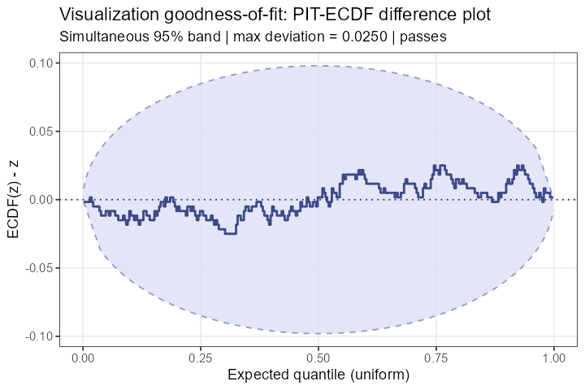
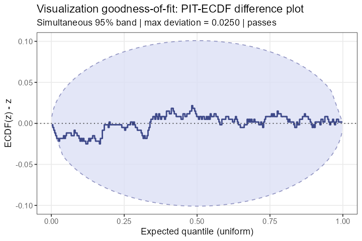
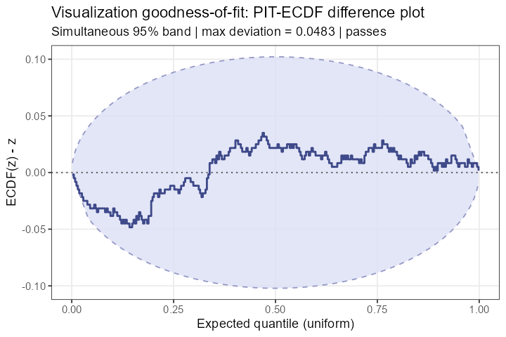

This is a personal study project. I implemented this R package to understand the methodology in the paper below by translating it into working code. It is not intended for publication or distribution.
Paper being implemented:
All statistical methodology, terminology, and algorithms belong to the original authors. This code is an independent reimplementation for learning purposes only.
The package answers a question that bayesplot cannot: is the plot type I chose faithful to my data? A KDE overlay, a histogram, and a quantile dot plot all represent the same data differently — ppcviz quantifies how much each representation distorts the distribution, using the data’s own PIT values as a probe.
What is new vs. bayesplot?
bayesplot already provides excellent PPC plots. ppcviz adds what is not in bayesplot:
| Feature | bayesplot |
ppcviz |
|---|---|---|
| Boundary-corrected KDE PPC | ppc_dens_overlay(bounds=) |
— |
| Visualization PIT values | — |
pit_kde(), pit_histogram(), pit_qdotplot()
|
| Viz. goodness-of-fit test | — |
viz_gof(), check_viz()
|
| Data property detection | — |
detect_discrete(), detect_bounds()
|
| PAVA calibration plots | — |
ppc_calibration(), ppc_calibration_residual(), ppc_calibration_discrete()
|
| Automatic recommender | — | recommend_ppc() |
Gallery
Visualization goodness-of-fit: viz_gof()
KDE on normal data — passes the uniformity test:

KDE on Beta(2,5) data without boundary correction — fails:

Same Beta(2,5) data with bounds = c(0, 1) — passes after correction:

Quick demo
library(ppcviz)
set.seed(42)
y <- rnorm(300)
# 1. Detect data properties
detect_discrete(y) # => not discrete
detect_bounds(y) # => no natural bounds
# 2. Test if a KDE is an appropriate visualization
check_viz(y, method = "kde")
# i KDE density plot is APPROPRIATE for this data.
# 3. Test if KDE is appropriate for bounded Beta data
y_beta <- rbeta(300, 2, 5)
check_viz(y_beta, method = "kde")
# ! KDE density plot may be MISLEADING for this data.
check_viz(y_beta, method = "kde", bounds = c(0, 1))
# i KDE density plot is APPROPRIATE for this data.
# 4. PAVA calibration plot for binary outcomes
n <- 200
true_p <- plogis(rnorm(n))
y_bin <- rbinom(n, 1, true_p)
yrep <- do.call(rbind, lapply(1:100, function(i) rbinom(n, 1, true_p)))
ppc_calibration(y_bin, yrep)
# 5. Get an automatic recommendation
recommend_ppc(rpois(300, lambda = 3))
# => Use ppc_rootogram() or ppc_bars() — discrete data detectedFunction reference
PIT computation
| Function | Description |
|---|---|
pit_kde(y, bw, kernel, bounds) |
Visualization PIT w.r.t. KDE |
pit_histogram(y, breaks) |
Visualization PIT w.r.t. histogram |
pit_qdotplot(y, n_quantiles, bw) |
Randomised PIT for quantile dot plots |
Goodness-of-fit
| Function | Description |
|---|---|
viz_gof(pit, prob, K) |
Simultaneous ECDF uniformity test |
check_viz(y, method, ...) |
Wrapper: compute PIT + print verdict |
Data property detection
| Function | Description |
|---|---|
detect_discrete(y, threshold) |
Detect point masses / discreteness |
detect_bounds(y, tol) |
Detect natural lower/upper bounds |
Source paper
All methodology implemented here is from:
- Säilynoja, T., Johnson, A., Martin, R., & Vehtari, A. (2025).
Recommendations for visual predictive checks in Bayesian workflow
arXiv:2503.01509.
Please cite the original paper, not this repository.